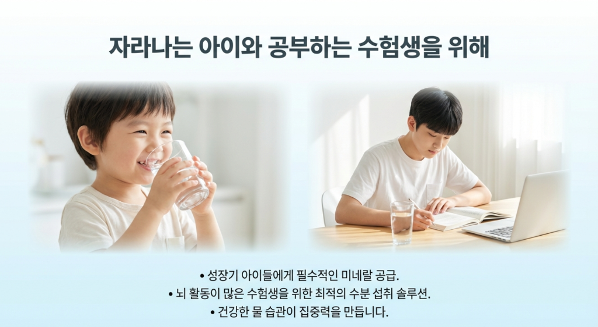
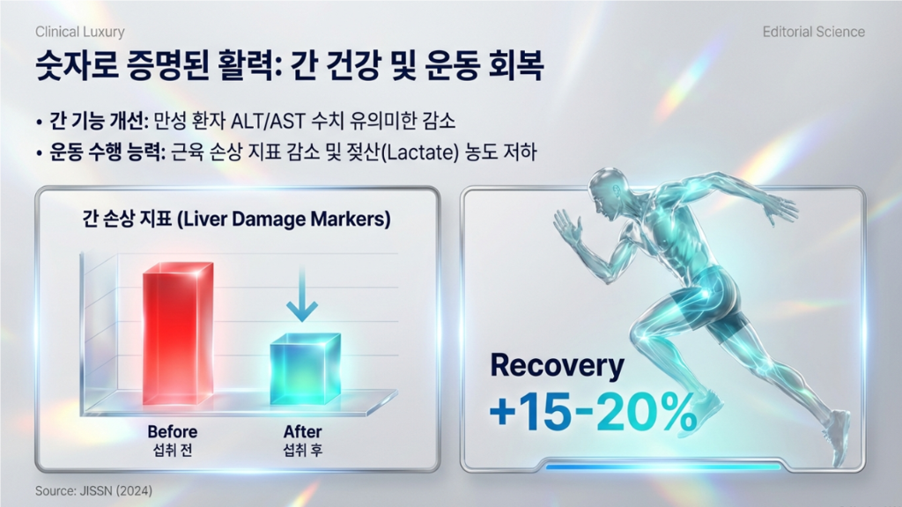
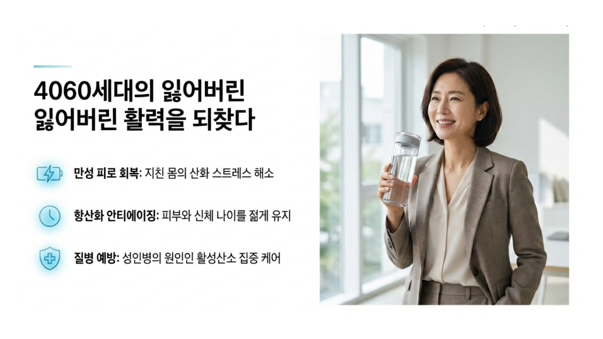
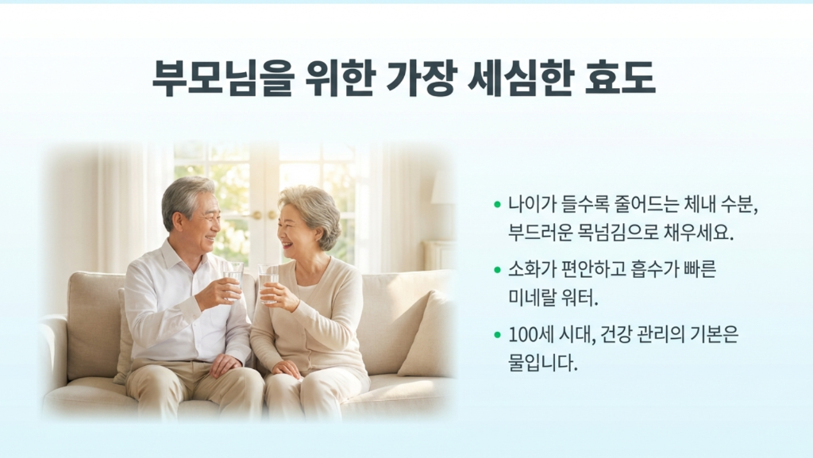

가정, 부모님 댁, 일상 속 다양한 생활 환경까지
매일 사용하는 물의 기준을 바꾸는 새로운 선택
👉 추천한 고객이 구독을 유지하는 기간 동안 매월 2,000원씩 돌려드립니다.
매일 쓰는 물이기에, 더 편안하고 더 신중하게 선택할 수 있도록
미네랄 반응 기반 방식으로 일상에서 사용하는 물의 흐름에 새로운 기준을 제안합니다.
주방 공간을 크게 차지하지 않으면서 가정과 매장에서 부담 없이 사용할 수 있습니다.
식수, 커피, 차, 요리 등 하루의 물 사용 전반에 자연스럽게 연결됩니다.
단순 판매가 아니라 상담, 설치, 사용 안내까지 연결되는 구조로 운영됩니다.
우리 가족이 마시는 물을 더 신경 쓰고 싶은 분
부모님 댁에 더 편리한 물 환경을 마련해드리고 싶은 분
커피, 차, 요리에 사용하는 물까지 중요하게 생각하는 분
부담을 낮춘 구독 방식으로 시작하고 싶은 분
집과 일상 속 물 습관을 조금 더 신중하게 관리하고 싶은 분
우리의 일상 속, 물은 모두에게 다르게 필요합니다.

매일 마시는 물의 습관은 성장기와 집중이 필요한 시기에 더욱 중요합니다. 집에서 자연스럽게 사용하는 물부터 차분한 공부 환경까지 이어지는 생활의 흐름을 생각할 수 있습니다.

운동, 활동, 바쁜 일상 속에서 물은 가장 기본이 되는 요소입니다. 일상에서 꾸준하게 관리된 물을 사용하는 것부터 생활 습관의 균형이 시작될 수 있습니다.

바쁜 일정 속에서도 매일 반복되는 물 섭취는 가장 기본적인 관리입니다. 가정과 직장에서 부담 없이 사용할 수 있는 환경이 일상 관리의 시작이 됩니다.

무거운 생수를 구매하는 부담 없이 집에서 편리하게 물을 사용할 수 있는 환경. 일상 속 작은 변화가 더 편안한 생활로 이어질 수 있습니다.
참빛은 특정한 사람만을 위한 제품이 아니라,
모든 세대의 일상 속 물 사용을 위한 선택입니다.
부담 없는 구조로 시작할 수 있습니다
설치 환경과 이용 조건은 상담을 통해 안내드립니다
수소 관련 연구는 산화 스트레스, 회복, 생활 건강 등 다양한 분야에서
지속적으로 연구되고 있습니다.
"활성산소만 골라 제거하는 스마트 항산화"
"세포를 녹슬게 하는 활성산소, 이제 수소수로 케어해 보세요."
수소는 지구상에서 가장 작은 항산화 물질로, 세포막과 뇌장벽(BBB)을 통과해 유해 활성산소만을 선택적으로 제거합니다.
"젖산은 줄이고, 에너지는 채우는 밸런스 유지"
"운동 후 피로 젖산, 수소수로 빠르게 케어 해 보세요."
수소수는 운동 중 발생하는 산성화를 억제하고 염증 수치를 낮춰 근육 회복의 흐름을 돕는 방향으로 연구되고 있습니다.
"풍부한 미네랄로 깨우는 신진대사의 스위치"
"마시는 순간 퍼지는 미네랄, 몸속 생기를 깨우는 물."
미네랄과 수소의 조합은 일상적인 물 사용의 질을 높이는 방향으로 소개할 수 있습니다.
"온 가족 건강을 지키는 가장 쉬운 습관"
"매일 마시는 미네랄 수소수, 우리 집 전용 건강 도우미."
일상적인 음용과 활용을 통해 가정 안에서 물 사용 습관을 더 편안하게 바꾸는 방향으로 안내할 수 있습니다.
상담은 상담대로 진행하고, 회원가입 후에는 본인 전용 추천코드와 추천링크를 발급받아 지인에게 쉽게 공유할 수 있습니다.
👉
추천한 고객이 구독을 유지하는 기간 동안,
매월 2,000원씩 돌려드립니다.
설치 환경과 사용 목적에 맞춰 순차적으로 안내드립니다.
상담신청은 상담 접수 전용입니다. 추천링크 발급은 회원가입 후 진행됩니다.
상담신청 시에는 추천코드가 자동 반영될 수 있고,
회원가입 후에는 본인의 추천코드와 추천링크를 따로 발급받게 됩니다.